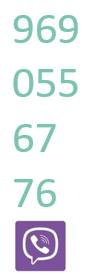

A range of quality language services from a native Russian who speaks British English.
Language services
Translation
Rates: En > Ru £0.03 or $0.04 per source word (600 rubles per 1800 characters with spaces).
While I do research for every job, I appreciate any material that may contribute to the accuracy and consistency of the result, such as glossaries and quality translations. I team with English-speaking experts in medicine and game development and localisation. Test jobs of reasonable size are welcome; I reserve the right to decline a job that is outside my field.
Keywords: pdf doc docx cosmetics veterinary pet food source code popular science business correspondence...
Examples
Advertising
Source
Зарегистрируйтесь и получите возможность выиграть культурные выходные в Санкт-Петербурге с 1 по 3 июля: путешествие на двоих из Москвы и обратно, обзорная экскурсия по северной столице и бесценные впечатления от просмотра балета «Сильфида» в ложе Мариинского театра.
Поставленный в 1836 году балетмейстером Августом Бурнонвилем, этот двуактный балет стал одним из первых в истории романтических балетов и признанным шедевром балетного искусства, обошедшим сцены многих музыкальных театров по всему миру.
Translation
Sign up for the chance to win a cultural weekend in St Petersburg from 1 July to 3 July, which includes a return travel from Moscow for two people, a highlights tour of Russia’s northern capital and the priceless experience of watching the ballet La Sylphide from the box of the Mariinsky Theatre.
Choreographed by August Bournonville in 1836, this creation in two acts became one of the first romantic ballets in history and is recognised as a masterpiece of the art of ballet that has graced the stages of many musical theatres around the world.
Filmmaking
Source
Немного о формате кадра. С анаморфотной оптикой мы получаем широкий кадр, который в формате 16х9 имеет сверху и снизу черное каше. Кадр выглядит так, как часто выглядит кино. Черное каше в эфире не обрезается, и для рекламы – это идеальная площадка для титров и лигалов. Всю информацию можно размещать на ней. Четко, читабельно, не залезая на игровую часть. Поэтому для нас в анаморфоте больше плюсов, чем минусов.
Translation
A little about aspect ratio. With anamorphic lenses, we get a widescreen, which in 16×9 has black bars on top and bottom. This gives a look often seen in cinema. Black bars are not clipped off when the production goes on air, making it a perfect place for advertising captions and legal text. We can safely place any information there. Clearly, legibly, without reaching into the live-action area. Therefore, for us, there are more pros than cons for an anamorphic.
Services
Source
Можно смело выбросить программу передач: с помощью приложения YouTube вы можете смотреть фильмы, сериалы, ТВ-шоу или просто смешные ролики с котятами.
•
Раньше нам приходилось покупать газеты или ходить в библиотеки, чтобы узнать что-то новое или найти ответы на вопросы. Теперь это романтика:
всё есть в мобильном интернете.
•
Приложениями пользуется весь мир, поэтому названия пишутся на английском языке. Чтобы вы не запутались, мы подготовили список всех необходимых приложений со значками и указанием названий на двух языках.
•
Теперь вы готовы отправиться в самостоятельное
путешествие по мобильному интернету. Удачи!
Translation
Feel safe to bin the printed TV listings: with YouTube application you’ll be able to watch movies, series, TV shows or simply funny cat videos.
•
We used to buy newspapers of spend time at libraries to learn something new or find answers. ‘Romance, farewell!’: all of that can now be found on the mobile-enabled Internet.
•
Because of their worldwide use, applications are named in English. To help you through any confusion we’ve made a list of all essential applications along with their icons and names spelt in two languages.
•
Now you’re ready to explore the mobile Internet solo. Good luck!
Proof-reading
Russian: full scope.
English: spelling, punctuation and grammar.
Delivery formats: all text document types, including doc and docx with changes tracked; pdf; webpage source code (xml, html); Adobe Photoshop files containing text layers.
Rate: $2.8 or £2.15 per 1,000 words (1000 rubles per 40,000 characters with spaces).
Please send me your document or a link to it for a full quote.
Examples

Original webpage

Output in *.pdf

More
Speech to text
Russian: audio transcription (speech to text services). My daily rate is one hour of audio which includes typing, formatting, verification of proper names, titles and terms, spelling and punctuation. Online topic research to improve contextual accuracy. Time codes. Formatting to client's special instructions.
Copy typing
Russian: typing from handwritten or typewritten documents. Daily output: about 40 pages typed (depending on legibility), with correct spelling and punctuation.
Single-speaker dictation over the phone, virtually simultaneous typing (about 40 words per minute).
About
CV / Resume
Contact

